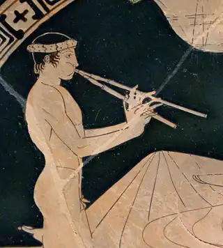

Qual foi o primeiro instrumento musical registrado na história?
No Dia Internacional da Música, celebrado anualmente em , descubra como foi feito o primeiro artefato dedicado à música e usado nos primórdios da humanidade.
A flauta de osso
Segundo a Encyclopedia Britannica (plataforma de conhecimentos gerais baseada no Reino Unido), o instrumento musical mais antigo que foi encontrado é uma flauta de osso, a qual se acredita ter cerca de 42 mil anos de idade.
A arqueologia revelou instrumentos musicais como cachimbos e assobios no período paleolítico e
tambores de argila e trombetas de concha no período neolítico
, explica a Britannica.
As culturas antigas da Mesopotâmia, do Mediterrâneo, da Índia, do Leste Asiático e das Américas
possuíam uma variedade diversificada e bem desenvolvida de instrumentos musicais, indicando que
deve ter havido um longo desenvolvimento anterior
, completa a fonte.
O aulos na Grécia Antiga

Na Grécia Antiga, por exemplo, os instrumentos musicais gregos mais antigos que sobreviveram são os auloi de osso (também conhecido como kalamos ou libykos lotos, era um instrumento de sopro), que datam da Era Neolítica (7º a 4º milênio a.C.) e foram encontrados no oeste da Macedônia, na Tessália e na ilha de Mykonos, diz a World History Encyclopedia (plataforma de conhecimento dedicado à disseminação de conhecimento de história).
O aulos era tocado em festivais, procissões de nascimento e morte, jogos atléticos – para que os
atletas mantivessem o ritmo enquanto se exercitavam
, diz a
WHE. Também era usado em ocasiões sociais e
tragédias no teatro grego
, sendo associado ao deus Dionísio.
A plataforma histórica detalha ainda que o som produzido por um auleta, ou seja, o artista
que tocava o aulos, era rítmico e penetrante
podia vir acompanhado de um coro de homens.